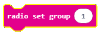
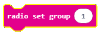
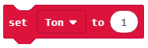
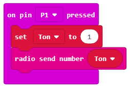
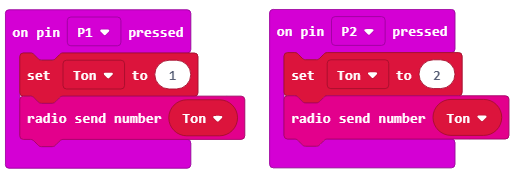

Projektni zadatak - Raspevane voćke¶
Ton predstavlja pravilno, ravnomerno treperenje (kretnje) zvučnog izvora.
Ton je zvuk koji ima određenu:
visinu - određuje brzina i broj treperenja u jednoj sekundi. Što je veći broj treperenja u sekundi, ton više zvuči i obrnuto. Ljudsko uho čuje od 16 (najniži ton koji naše uho može da odredi) - 20 000 (najviši ton koji naše uho može da odredi) treperenja/sec.
jačinu - zavisi od veličine treperenja (amplitude) izvora tona. Što je veća amplituda, ton je glasniji. Na jačinu tona utiče i visina tona. Naime, duboki tonovi se čuju znatno slabije od visokih tonova.
trajanje - zavisi od toga koliko dugo treperi izvor tona. Kad se umiri, zvuk prestaje.
boju - zavisi od vrste materijala, oblika i veličine zvučnog izvora koji treperi.
Napravićemo muzički instrument uz korišćenje Micro:bit-a pomoću koga ćemo odsvirati muzičku lestvicu.
Muzička lestvica predstavlja niz od osam uzastopnih tonova (sedam tonova različitog naziva, i osmi ton koji predstavlja ponovljeno ime prvog tona) razvrstanih u oktave. Tonovi u lestvici se mogu čitati po abecedi i po solmizaciji. Po abecedi tonovi su: c (ce), d (de), e (e), f (ef), g (ge), a (a) i h (ha), a po solmizaciji su: do (ili ut), re, mi, fa, sol (ili so), la, si (ili ti), do. Micro:bit ćemo koristiti kako bismo proizveli oktavu C, D, E, F, G, A, H.
Za izradu našeg klavira potrebno je:
4 micro:bit
slušalice
krokodilke
voćke (8)
aluminijumska folija
Za izradu Klavira (Raspevanih voćki) potrebno je najpre uraditi fizički uređaj koji se sastoji od voćki na kojima ćemo svirati i Micro:bit-ova.

Povezivanje Micro:bit-a sa voćkama (voće koje ima dosta tečnost) i slušalicama:
Korak 1: Prvi Micro:bit povezujemo tako što uzemljenje (GND) povezujemo sa slušalicama i to pomoću pina (GND) koristeći krokodilke. Slika ispod pokazuje vezu između uzemljenja i Micro:bit (samo za jedan uređaj). GND je uzemljenje koje štiti Micro:bit od strujnog udara. Povezujemo sa žicom koja će imati ulogu uzemljenja. Pored toga potrebno je povezati Micro:bit i slušalice preko PIN0. Povežemo krokodilke na PIN0 i ulaz za slušalice (na njegov vrh). Važno je da se veze na ulazu za slušalice ne dodiruju.

Korak 2: Kod drugog Micro: bit poveži krokodilku na GND i žicu i spoji je sa bananom (kraj kokodilke ubaciti u bananu). Povezati Micro:bit sa tri pomorandže na PIN0, PIN1 i PIN2 preko krokodilki.
Korak 3: Kod trećeg Micro: bit poveži krokodilku na GND i žicu. Povezujemo Micro:bit i pomorandžu na PIN0 preko krokodilke. Povezati Micro:bit i dve pomorandže na PIN1 i PIN2 preko krokodilke.
Korak 4: Kod četvrtog Micro: bit poveži krokodilku na GND i žicu. Povezujemo Micro:bit i pomorandžu na PIN0 preko krokodilke. Povezati Micro:bit i dve pomorandže na PIN1 i PIN2 preko krokodilke.
Sada kada smo napravili fizički klavir (Raspevane voćke) potrebno je napraviti programe za svaki od Micro:bit-ova.

Programiranje
Potrebno je programirati zasebno sve Micro:bit-a: da komuniciraju među sobom i da proizvedi zvuk.
Korak 1
Idite na https://makecode.microbit.org/.
Korak 2
Kreirajte novi projekat. Sada želimo da isprogramiramo Micro:bit-ove da šalju informacije - odgovarjuće brojeve (za odgovarajuće tonove) kada je pritisnut određeni PIN. Pored toga potrebno je da isprogramiramo Micro:bit-ove da komuniciraju među sobom. Na taj način u zavisnosti od broja (tona) koje Micro:bit-ovi „proizvedu“, tačnije pošalju, Micro:bit prima broj i na slušalicama će se reprodukovati željeni ton.
Korak 3
Kada želimo da uspostavimo komunikaciju (da iskoristimo radio komunukaciju) između Micro:bit-ova, svi uključeni Micro:bit-ovi moraju da pripadaju istoj grupi, odnosno da koriste isti ID grupe. Kreiranjem ID grupe, u stvari kreira se prostor u kome će komunicirati uređaji.
Da bismo kreirali ID grupu iz kategorije  prevlačimo blok  blok
prevlačimo blok  blok  . U prostor
. U prostor  unosimo željeni broj za ID grupe. To može biti bilo koji broj. Mi ćemo ostaviti da to bude 1. Na taj način smo kreirali grupu sa ID 1 u kojoj će komunicirati svi Micro:bit-ovi.
unosimo željeni broj za ID grupe. To može biti bilo koji broj. Mi ćemo ostaviti da to bude 1. Na taj način smo kreirali grupu sa ID 1 u kojoj će komunicirati svi Micro:bit-ovi.
Deo koda kojim se kreira grupa za komunikaciju:

Korak 4
Da bi se poslao radio signal drugom uređaju koji će na osnovu toga „odreagovati“ tako da se čuje ton nakon dodirivanja (pritiska) voćke, potrebno je u deo koda za registrovanje događaja (kada se voće dodirne) uvesti blok  .
.
Događaj će biti registrovan kada je pritisnut neki od pinova na Micro:bit-u. Da bismo to postigli uvodimo blok  iz kategorije
iz kategorije  . Iz liste datog bloka biramo pin (P0, P1, P2) koji pokreće događaj slanja broja (tona) koji će biti prikazan.
. Iz liste datog bloka biramo pin (P0, P1, P2) koji pokreće događaj slanja broja (tona) koji će biti prikazan.
Potrebno je odrediti način za predstavljanje (čuvanje) vrednosti željenih tonova (Middle C ili 262, Middle D ili 294, Middle E ili 330, Middle F ili 349, Middle G ili 392, Middle A ili 440, Middle B ili 494). Pored toga potrebno je i definisati vrednosti za svaku od gore navedenih nota. Rešenje za ovaj problem jeste uvođenje promenljive.
Promenljivu možeš da shvatiš kao prostor u memoriji računara, sličan kutiji, u kome se, za vreme izvršavanja programa, čuvaju neke međuvrednosti. Promenljive imaju svoja imena. Kada u programu želiš da koristiš vrednost promenljive, dovoljno je da navedeš njeno ime.
Promenljivu kreiramo tako što, u kategoriji Variables (1), kliknemo na dugme Make a variable (Napravi promenljivu) (2) i u polje unosimo ime promenljive (3), u našem slučaju Ton. Klikom na dugme OK (4), kreirana je promenljiva (5).

Vrednosti promenljive Ton će se kretati od 1 do 8.
U slučaju da je pritisnut pin P1, za promenljivu Ton postavljamo početnu vrednost na 1, korišćenjem bloka .
Šaljemo radio signal ka Micro:bit-u korišćenjem bloka u kome u delu  prevlačimo promenljivu
prevlačimo promenljivu Ton koju želimo da pošaljemo, odnosno dobijamo blok  .
.
Dobijamo blok:
Isti postupak uradimo i za pin P2, postavljajući vrednosti promenljive Ton na 2 ako je pritisnut pin P2.
Izgled koda za dirke klavira (C, D):
Konačan izgled programa kojim se šalje informacija o tome koji su pinovi pritisnuti (P1 ili P2):

Sledeći korak je da Micro:bit primi informaciju (u našem slučaju broj) na osnovu koje će da „odreaguje“ tako što će se čuti zvuk.
Za to ćemo iz kategorije Radio prevući blok  . U zavisnosti od broja (
. U zavisnosti od broja (1 ili 2) koji je primljen ovaj Micro:bit reprodukuje željeni ton.
Za to koristimo blok  iz katagorije
iz katagorije  .
.
U polje uslova prevlačimo bloka  kojim se proverava da li je pritisnut pin
kojim se proverava da li je pritisnut pin P1 ili ne:

Ako je pritisnut pin P1 čuće se ton C. Reprodukciju tona potižemo tako što u prevlačimo blok  iz kategorije
iz kategorije  kojim se reprodukuje zvuk. U datom bloku iz padajućih lista biramo ton i dužinu istog:
kojim se reprodukuje zvuk. U datom bloku iz padajućih lista biramo ton i dužinu istog:
Izgled bloka:

U blok dodajemo još jedan uslov (pritisnut pin P2) klikom na dugme  . Ako je pritisnut pin
. Ako je pritisnut pin P2 reprodukovaće se ton D.
Izgled koda:

Napomena: Da bi zvuk mogao da se reprodukuje Micro:bit mora da bude povezan sa zvučnicima ili slušalicama na sledeći način.

Konačan izgled programa za reprodukciju tonova C i D:

Klikom na dugme ili dugme  preuzmite .hex fajl na vaš računar. Prevlačenjem fajla na Micro:bit on je spreman za rad.
preuzmite .hex fajl na vaš računar. Prevlačenjem fajla na Micro:bit on je spreman za rad.
Rukom držimo bananu, a drugu ruku koristimo za sviranje po voćkama.
Na isti način potrebno je isprogramirati preostala dva Micro:bit-a za tonove Middle E ili 330,F ili 349, Middle G ili 392, Middle A ili 440, Middle B ili 494.
Konačan kod programa za Micro:bit preko koga se šalje informacija o tome koji su pinovi pritisnuti, kako bi se na osnovu toga reprodukovali tonovi E, F i G:

Konačan kod programa za Micro:bit preko koga se šalje informacija o tome koji su pinovi pritisnuti, kako bi se na osnovu toga reprodukovali tonovi A, H i C:

Nakon ovoga potrebno je dopuniti kod na Micro:bit-u koji će biti “oglašivač” zvuka:

Kada smo povezali sve voćkice i prebacili kodove, možemo da odsviramo neku lepu pesmu na našem voćnom klaviru.